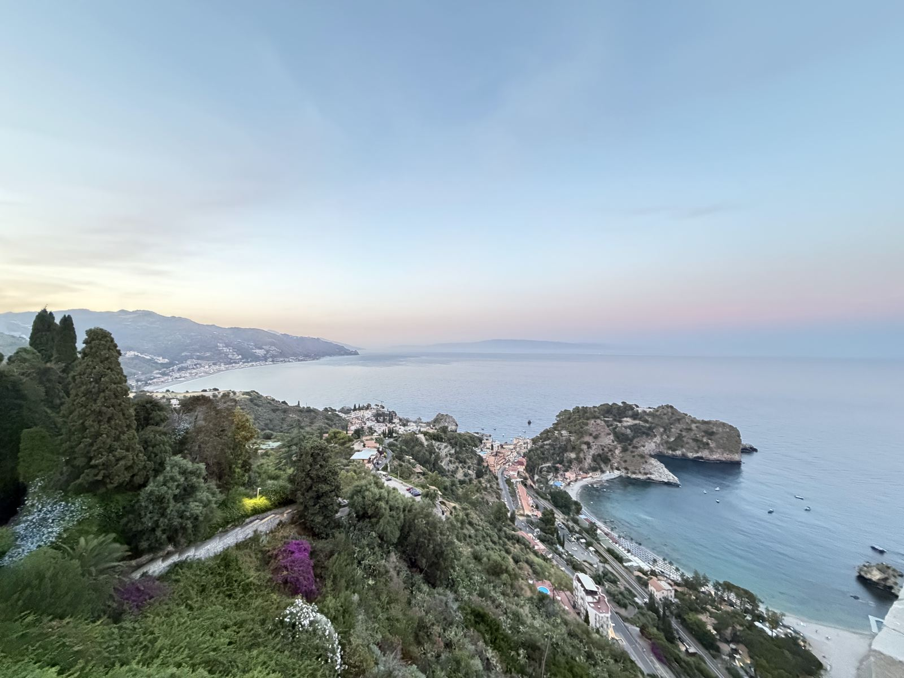
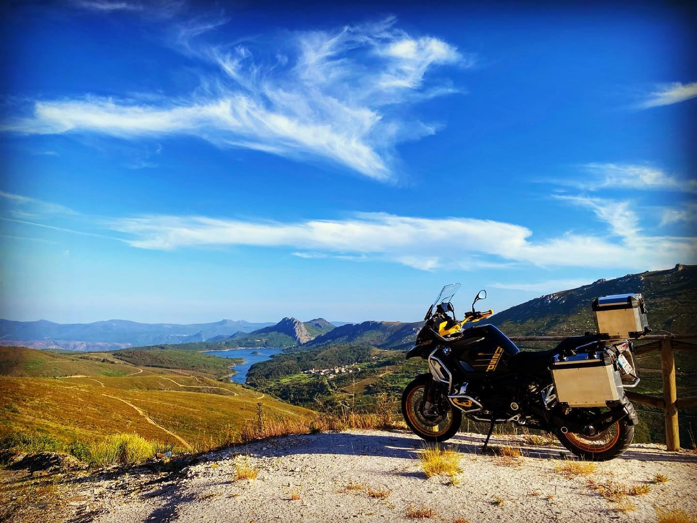

Miguel Teles de Amorim
Miguel Teles de Amorim
Photographs from 38 countries, and of the motorcycles and cars I have owned. The rest of the site is under construction.

38 countries · 227 cities and places Travel memories Landmarks and landscapes in 825 photographs, 2011–2026.
7 motorcycles and scooters · 4 cars Vehicles motorcycles and cars Everything I have owned since 2013, in 201 photographs.